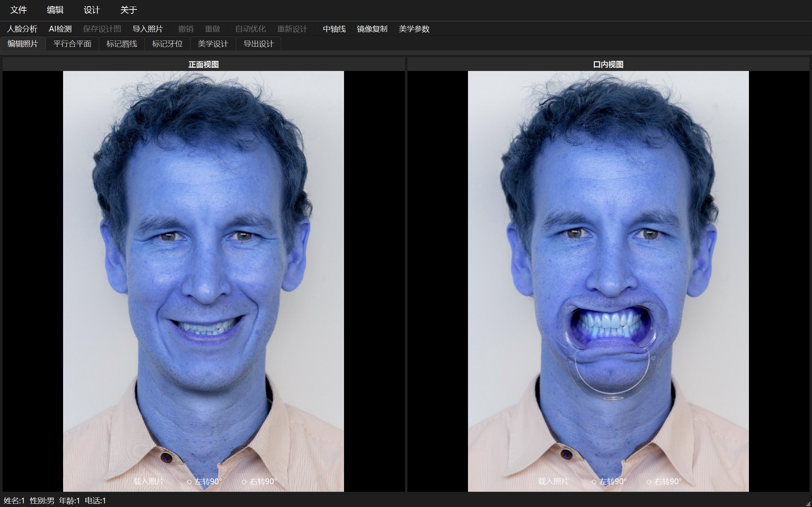
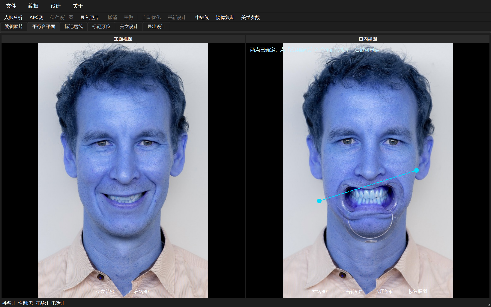
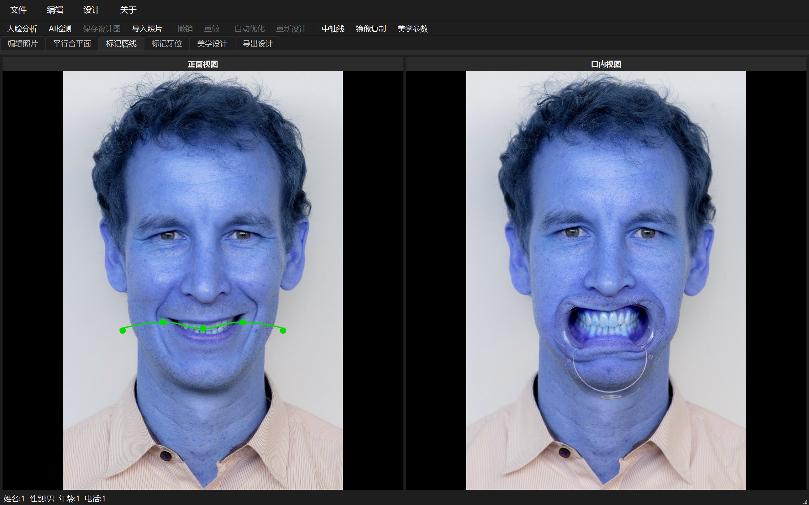
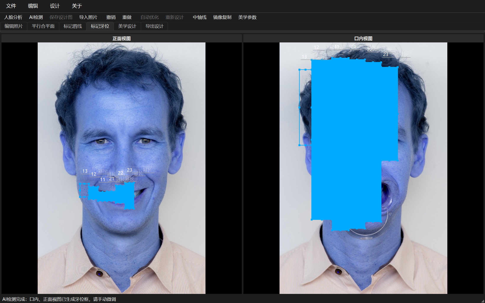
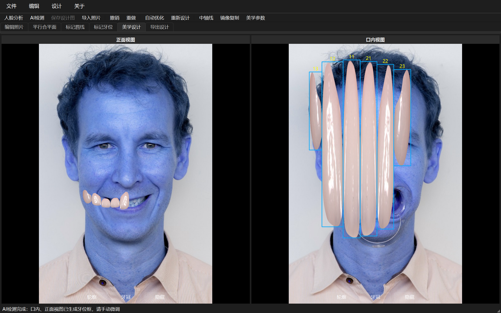
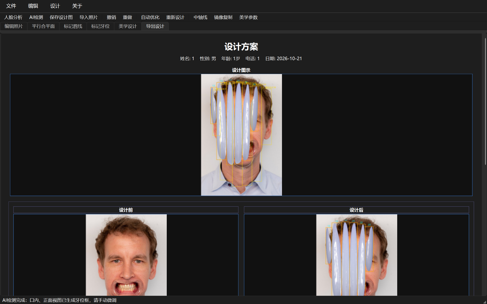

DEDD 数字化美学牙科设计 · 使用指南
Python 本地版 · 启动：双击 启动程序.bat · 运行环境：Anaconda dedd（Python 3.11.17）
总体流程：新建/打开工程 → 载入照片 → 按顶部 6 个步骤标签从左到右操作 → 导出设计图。
六步：编辑照片 → 平行合平面 → 标记唇线 → 标记牙位 → 美学设计 → 导出设计。
步骤 1 · 编辑照片

① 顶部菜单 文件 → 新建工程（或打开已有 .deddp 工程文件）；
② 左侧正面视图载入患者微笑正面照，右侧口内视图载入口内牙列照（点视图下方「载入照片」按钮）；
③ 可用「左转90°/右转90°」调整照片方向。
步骤 2 · 平行合平面

① 在口内视图沿咬合平面点两个点（左键单击，如牙列左侧一点、右侧一点，可拖动/右键删点）；
② 点「应用旋转」→ 程序自动旋转照片，把合平面校成水平；
③ 不满意点「恢复原图」回到旋转前。
步骤 3 · 标记唇线

① 在正面视图沿下唇微笑线（切缘曲线）单击添加绿色控制点；
② 可拖动点调整，右键删除；曲线自动平滑；
③ 点回起点可闭合曲线。
步骤 4 · 标记牙位

① 点工具栏「AI检测」→ 口内、正面两视图自动生成 6 颗前牙牙位框（13/12/11/21/22/23）；
② 也可在视图上手动拖框标记每颗牙；
③ 拖动框可移动、拖边角可缩放、右键删除；选中牙位可输入冠长（mm，用于美学参数毫米校准）；
④ AI 结果仅作初框，请逐颗微调贴合牙冠。
步骤 5 · 美学设计

① 点工具栏「自动优化」→ 按美学比例统一牙冠高度；「重新设计」→ 重新生成牙冠模型；
② 视图下方「轮廓 / 牙冠 / 隐藏」切换显示模式；
③ 可拖动牙冠框微调每颗牙的形态与位置；
④ 点「美学参数」可实时查看宽长比、宽度比、龈缘位置分析。
步骤 6 · 导出设计

① 查看设计方案总览（患者信息 + 设计图示 + 口内/正面「设计前/设计后」对比 + 美学参数标尺）；
② 点「保存设计图(JPG)」导出完整设计图（含标尺），可直接发给患者/技工沟通。
工具栏功能速查
| 按钮 | 作用 |
|---|
| 人脸分析 | 本地 OpenCV 检测人脸/眼睛，自动旋转摆正并裁剪人脸 |
| AI检测 | 口内/正面双视图自动生成 6 颗前牙牙位框（亮度分牙，本地无网络） |
| 保存设计图 | 把设计方案导出为 JPG（含美学参数标尺） |
| 导入照片 | 为当前视图重新载入照片 |
| 撤销 / 重做 | 撤销/恢复标记与调整操作 |
| 自动优化 | 按美学比例统一牙冠高度 |
| 重新设计 | 重新生成牙冠模型 |
| 中轴线 | 正面视图显示/拖动中轴线（红色虚线） |
| 镜像复制 | 按中轴线把已标记牙齿一键镜像复制到对侧（11↔21、12↔22、13↔23） |
| 美学参数 | 实时分析宽长比/宽度比/龈缘位置（依据期刊文献） |
工程文件：保存为 .deddp（zip 内含双视图照片+全部标记数据），下次「文件 → 打开工程」继续设计。
更新日志：每次代码更新记录在《更新日志.md》，含提交号，可随时查阅。